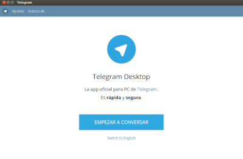

Gracias a al nueva actualización de debian buster, podemos hacer cosas maravillosas, como instalar Telegram Desktop o Rclone-Browser en nuestra Raspberry o Servidor remoto y ejecutarlas en tu escritorio, como si fuera una aplicación nativa de tu PC, pero descargando el contenido de Telegram o Rclone en tu Raspberry o Servidor.
En el caso de Telegram, está genial para todo aquel que desea descargar intercambiar archivos entre dispositivos, o descargar archivos que tengas en Telegram, en un canal privado que utilices de nube, o subir archivos a este canal privado.
Si utilizas Rclone, también podríamos utilizar Rclone-Browser para intercambiar el contenido de tu nube en Telegram con el resto de nubes.

Todo esto lo vamos ha hacer posible gracias a x11. En Linux podemos utilizarlo en cualquier distro. Si utilizas Windows o Mac, tendrás que instalar un programa para poder utilizarlo.
X11 es un servidor gráfico que nos permite el exportar el display de un servidor remoto a nuestro escritorio local. De manera que podremos visualizar aplicaciones gráficas del servidor en nuestro escritorio. Lo que se conoce como forwarding a través de SSH.
Telegram Desktop la instalaremos en nuestra Raspberry o Servidor, del mismo modo que en nuestro escritorio Linux. Abriremos la terminal de nuestra Raspberry y escribiremos:
sudo apt install telegram-desktop
También podemos instalar Rclone Browser, para gestionar nuestras nubes de un modo gráfico
sudo apt install rclone-browser
Nos conectamos vía ssh añadiendo el flag -X y se nos abrirá la aplicación de Telegram con interfaz gráfica en nuestro PC.
Sustituye tu nombre de usuario por angel y tu ip por la ip de tu Raspberry o servidor.
ssh -X angel@192.168.1.100 telegram-desktop
Yo, una vez más, os recomendaría crear un alias para arrancar desde tu PC, el Telegram remoto de tu Raspberry.
Ejemplo:
alias telegram-pi='ssh -X angel@192.168.1.100 telegram-desktop'
Del mismo modo, haremos lo propio para abrir Rclone Browser y si lo deseamos, crear un alias.
ssh -X angel@192.168.1.100 rclone-browser
Publicado por Angel el martes 17 septiembre del 2019
También te puede interesar:
Powered by org-bash-blog
Writing in orgmode whith emacs

Este obra está bajo una licencia de Creative Commons Reconocimiento-NoComercial-CompartirIgual 4.0 Internacional.